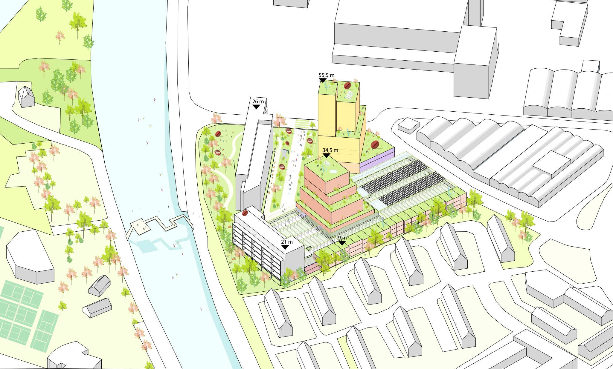

Vleutensevaart/h1>
Internship: feasibility study developed at Mei Architects and Planners, Rotterdam (NL), 2018
Vleutensevaart – From Industrial Heritage to Sustainable Urban Living:
The transformation of Vleutensevaart, a former automotive industrial site in the province of Utrecht, presents a forward-looking vision for urban redevelopment rooted in sustainability, inclusivity, and spatial quality. The project seeks to revitalize a post-industrial area through the integration of residential functions, social programs, and public green spaces, while preserving key elements of the site's identity and enhancing its ecological and social value.
At the heart of the plan lies the adaptive reuse of existing infrastructure—most notably, the conversion of the parking deck into a “power parking” platform for local energy generation. The design allows for a flexible building program that can accommodate both short- and long-stay residences, integrated with active ground-floor uses such as a sports facility and a coffee roastery, reinforcing the site’s connection to its industrial past.
Guiding principles include:
- Energy-positive design, with solar integration, low-temperature heating, heat recovery ventilation, and no gas connections.
- Healthy and livable housing environments, with abundant daylight, views of water and greenery, and comfortable indoor climates.
- Climate adaptation, including green roofs, fine dust filtration through vegetation, and water-saving systems to reduce strain on the sewage infrastructure.
- Strong community orientation, with car-free, green inner courtyards that are child-friendly, socially safe, and rich in biodiversity.
- Urban integration, minimizing negative impacts on adjacent housing, ensuring sunlight and privacy, and carefully aligning new volumes with existing urban profiles.
The development also prioritizes sustainable mobility, offering excellent access to public transportation, shared bicycle storage, EV charging, and car sharing. Moreover, the site avoids the creation of “back sides” or inactive edges: every facade contributes to the public life of the area, supported by lighting, visibility, and active programming.
By weaving together ecological intelligence, energy resilience, social connectivity, and spatial adaptability, Vleutensevaart stands as a model for how post-industrial urban sites can be transformed into healthy, vibrant, and future-proof neighborhoods.


